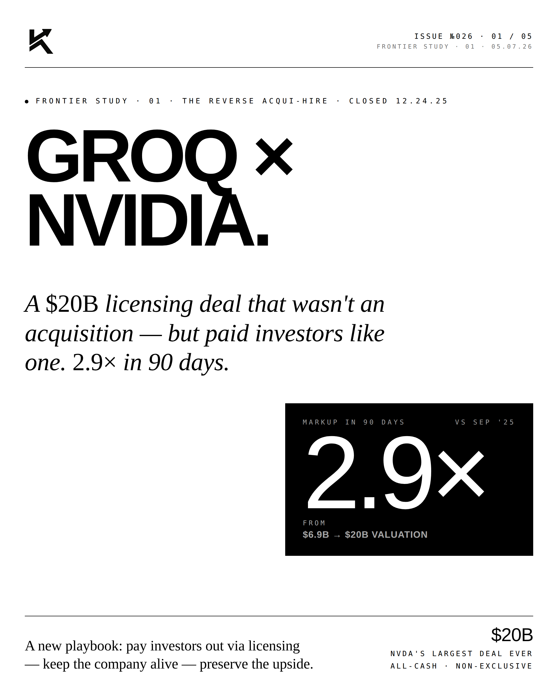
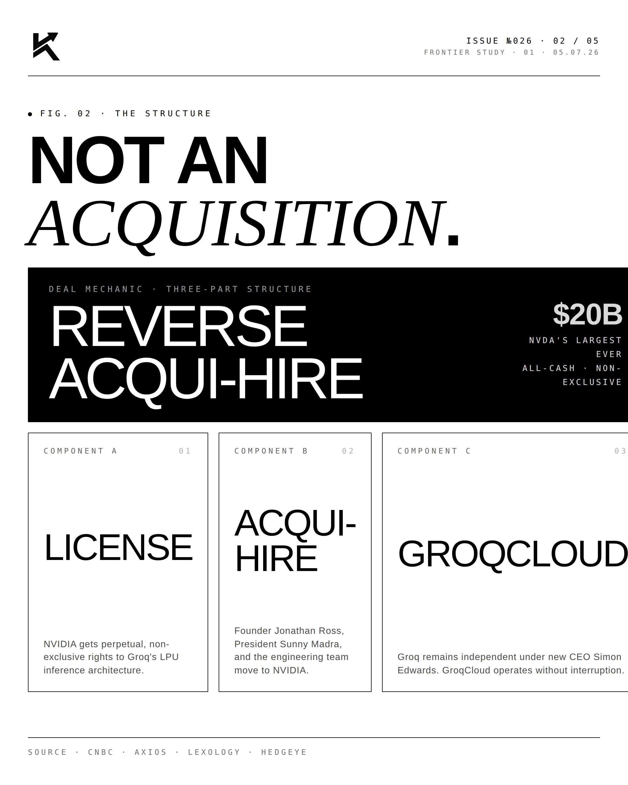
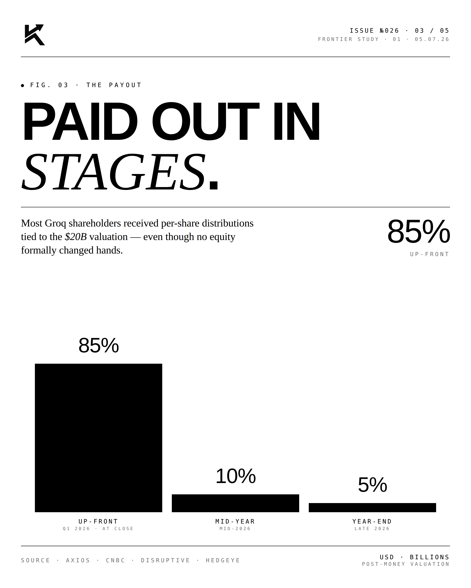
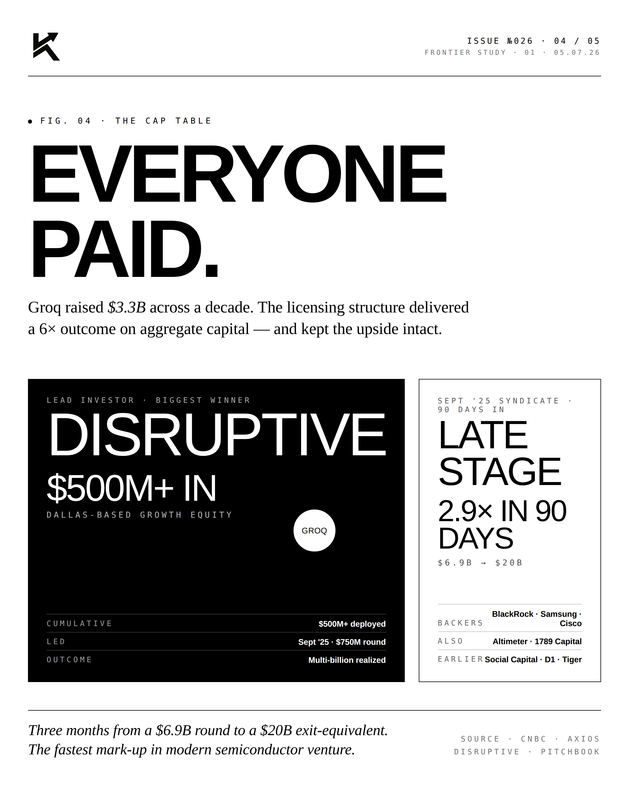
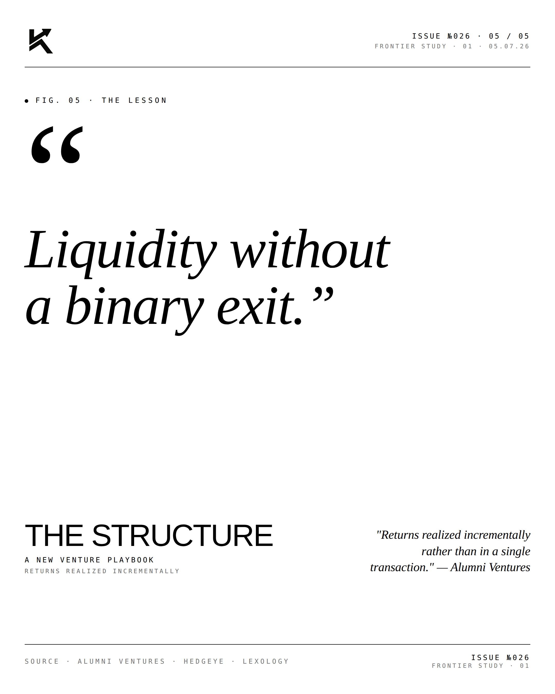

Groq.
NVIDIA owns training. Groq is winning inference. The custom-silicon bet on language-model serving is now an enterprise default. The split has happened.

The Structure.
AI compute splits cleanly into two markets: training (building the model) and inference (running it). NVIDIA dominates training — H100, H200, Blackwell, the entire data center stack. Groq targets inference with a custom LPU (Language Processing Unit) architecture that's purpose-built for serving LLMs at low latency and high throughput.

The Payout.
Inference is the bigger long-term market. Every chatbot query, every agent action, every Copilot completion is inference. By volume, inference dwarfs training by orders of magnitude. Groq's wedge — faster, cheaper inference — has translated into commercial wins at scale.

The Cap Table.
Sovereign-aligned capital, top-tier institutional investors, and strategic partners across the AI stack. The cap table tells the story: this is a company being positioned for the long run, not a flip.
"Training is one market.
Inference is another."JONATHAN ROSSFounder & CEO · Groq
"Training is a one-time cost. Inference is the recurring cost. The architecture that wins inference wins the long-run market."


NVIDIA owns training. Groq is winning inference. The market split is real.
Disclosure
The author is a Limited Partner in 1789 Capital, which holds a position in Groq. Personal commentary and editorial analysis. Not investment advice, not an offer or solicitation.